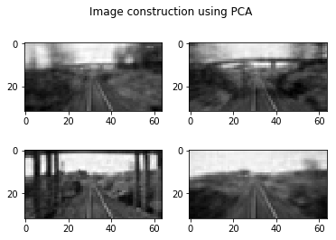

Principal Component Analysis (PCA)-dimensionality reduction algorithm
- Principal Component Analysis (PCA) is a dimension reduction algorithm where a large numberof variables will be described by a smaller number of variables without major loss of information.
For example, an object can be described by the numerous number of it’s properties.
PrincipalComponent Analysis tries summarize the properties. But it does not mean that it discards
theredundant properties, it makes the new properties of an object using the existing properties.
Inother words, PCA tries to find a low dimensional linear subspace onto which the
data can beprojected.. PCA conducts it in a way, such that as much as possible variance (or scatter)
of thesamples is retained and the first principal component has the largest possible variance, the
secondcomponent has second largest variance etc.
- Subtract the mean of the data set.
- Compute EVD of ${R_{XX}}$, taking into account that eigenvalues are arranged in descending order.
- Collect finite amount of $d'$ ($d' < d$) eigenvectors of ${R_{XX}}$ in matrix ${W}$, where $d'$ is a new dimension of the projected data ${Y}$.
- Matrix $W$represents a new basis for our data, so project the data onto this basis by multiplication $Y = WX$.

Consider a $d$-dimensional data set $X=\{x^{(1)},x^{(2)},x^{(3)},...., x^{(N)} \}$, where $N$ is the number of samples or observations. Each sample is a $d$-dimensional feature vector. The data set can be represented in terms of $d \times N$ matrix $X$. We define a new matrix $W (dimension: d\times d)$ which transforms $X$ to $Y$.
\begin{equation} \label{eqn_PCA} Y = WX. \end{equation} This equation shows the coordinate transformation (or change of the basis). Geometrically, $W$ stretches and rotates the $X$. Let $w_1,w_2,...,w_d$ be the row vectors of $W$ and $x_1,x_2,...,x_N$ be the column vectors of the $X$ . The result of the dot product between $W$ and $X$ is \begin{equation} \label{PCA_eqn2} WX = \begin{bmatrix} {w_{1}x_{1}} & {w_{1}x_{2}} & {w_{1}x_{3}} & \dots & {w_{1}x_{N}} \\ {w_{2}x_{1}} & {w_{2}x_{2}} & {w_{2}x_{3}} & \dots & {w_{2}x_{N}} \\ \vdots & \vdots & \vdots & \ddots&\vdots \\ {w_{d}x_{1}} & {w_{d}x_{2}} & {w_{d}x_{3}} & \dots & {w_{d}x_{N}} \end{bmatrix} = {Y}. \end{equation}Data $X$ is projected onto the rows of $W$. Hence, the rows of $W$ now are a new basis for the columns of $X$, which are denoted as the principal component directions. In turn, the rows of $Y$ are the principal components. We looked for a transformation, which keeps as much as possible variance of the data. We aim to separate signal and noise, and we assume noise to have smaller variance compared to the signal. We did it by de-correlation of the original data (sometimes in literature it is called \textit{whitening data}) by getting the directions in which variance is maximized, then used these directions as a new orthonormal basis for our data. Estimation of a covariance matrix of $d \times N$ dimensional data $X$, assuming $X$ to be zero-mean, can be calculated as:
\[ {R_{XX}} = \frac{1}{N-1}{XX^{T}} = \frac{1}{N-1} \begin{bmatrix} {x_{1}x_{1}^{T}} & {x_{1}x_{2}^{T}} & {x_{1}x_{3}^{T}} & \dots & {x_{1}x_{d}^{T}} \\ {x_{2}x_{1}^{T}} & {x_{2}x_{2}^{T}} & {x_{2}x_{3}^{T}} & \dots & {x_{2}x_{d}^{T}} \\ \vdots & \vdots & \vdots & \ddots&\vdots \\ {x_{d}x_{1}^{T}} & {x_{d}x_{2}^{T}} & {x_{d}x_{3}^{T}} & \dots & {x_{d}x_{d}^{T}} \\ \end{bmatrix}, \] The diagonal entities of $R_{XX}$ represent the variance of elements $x_{i}$, and off-diagonal represent the cross-covariance between $x_{i}$ and $x_{j}$. The matrices with this structure (which are square symmetric by their nature) are called \textit{Variance - Covariance} matrices. Since our main goal is dimensionality reduction, i.e, reducing of the redundancy of the data. That means that we should keep cross-correlation between off-diagonal elements as small as possible. Another way of saying this is that covariance matrix of the transformed space $Y$ is diagonal. Therefore, need to find such $W$ that diagonalizes $R_{YY}$, where $R_{YY}$ is a covariance matrix of transformed data. To address these two issues PCA is a solution to eigenvalue decomposition algorithm to diagonalize square symmetric matrix. Using $Y = WX$ expression for $Y$ can be written as \[ R_{YY} = \frac{1}{N-1}{YY^{T}} = \frac{1}{N-1}({WX})({WX})^{T} = \frac{1}{N-1}{WR_{XX}W}^{T}, \] Note that $R_{XX}$ is a $d \times d$ symmetric square matrix, therefore it can be orthonormally diagonalized like {A symmetric matrix is orthogonally diagonalizable by a matrix of orthonormal eigenvectors}: \[ R_{XX} = {U \Lambda}{U}^{T}, \] where $U$ is a square matrix whose columns are eigenvectors of $R_{XX}$, and ${\Lambda}$ is an diagonal matrix with eigenvalues of $R_{XX}$ as it entries. We choose rows of $W$ being eigenvectors of $R_{XX}$, so we can write ${W} = {U}^{T}$ , \[ {R_{YY}} = \frac{1}{N-1}{WR_{XX}}{W}^{T} = \frac{1}{N-1}{U}^{T}{U\Lambda}{U}^{T}{U} = \frac{1}{N-1}{\Lambda}. \] Since the inverse of an orthogonal matrix is its transpose, i.e., $U^{-1} =U^T=U^TU=I$, where $I$ is the identity matrix. As the result, the eigenvectors of ${R_{XX}}$ are the proper choice for $W$, since diagonalization of $ {R_{YY}}$ in the goal of PCA.
In practice PCA can be used on a data set $X$ in the following way:
An example::
Training images
Reconstruction of the training images using $PC$'s
